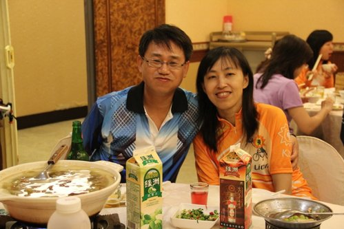

～～路有多長，心就有多寬～～
～～痛苦的爬坡之後是歡愉的心靈放鬆～～
社團成立5年了，就在季節交替、新舊交接之時，為了聯絡社員感情、宣揚社團成立初衷、以及讓新社員瞭解自行車基本概念，社長ted、副社長swallow、及小獅隊長等大大們勞心勞力的為我們籌劃這次大會，並插播養眼的、風潮時尚之帥哥美女車衣秀～～


時間：10月3日中午
〔活動內容〕
一、老友哈啦、新人入社
二、Pizza、烤鴨餐
用看的就知道有多好吃！
三、歷年活動介紹
出遊次數不勝枚舉，參與過的人定無法忘懷其中的艱辛與幸福滋味，約略整理如下：
〔環島＋二橫+花東〕
98年3月環島9天992公里，難度★★★★★！
99年3月中橫4天，難度★★★★★！
100年3月北橫3天，難度★★★★！
（北橫之後，小紀隊長裁示：爾後採輕鬆豪華型旅遊…如日月潭之旅──此計畫即將於來年舉辦）
101年4月花東3日
〔一日遊〕
96年中寮山…
97年花東、旗津誓師及親子遊、大鵬灣、觀音山、澄清湖、旭海、旗山+內門+美濃、台南…
98年美濃親子遊、大崗山、集集、東豐、墾丁、旗津親子遊、西拉雅…
99年大崗山、奮起湖、小琉球親子遊…
100年大崗山、台南、屏科大、大樹舊鐵橋、旭海、大鵬灣…
101年大崗山、北大武、愛河自行車道…
…最辛苦路段是上武嶺，如髮夾彎…

花東的空中飄是最愛
無役不與之貓哥，常常拍不到他，因為總是一馬當先 ，看不到人影。
，看不到人影。
精心籌劃出遊的小獅隊長，堪稱是活動「總監」 。
。
很man的社長這幾年常當鐵人。
四、車衣介紹
車衣設計淵源於前任社長超哥 ，是非常棒的設計，每個人穿起它來都特別年輕、顯瘦，男的帥、女的美，真的真的…
，是非常棒的設計，每個人穿起它來都特別年輕、顯瘦，男的帥、女的美，真的真的…
例如：

曾有路人甲問說「右邊那個是左邊的女兒嗎？」 ～哈哈～
～哈哈～
五、帥哥美女走秀
紙條哥（任昇）＋公路車
黑髮妹（瑋瑋）＋T3小折
掉渣哥（培睿）＋登山車
精彩走秀盡在FB～～
〔附註〕紙條哥之意，美眉傳遞紙條之人；掉渣哥之意，吃飯看到，嘴巴呆到菜渣掉下來。都在形容帥到不行的人。
(end)
果真是舉世無雙、內外兼具的堅強組織啊～河東獅愈來愈吸引人了～